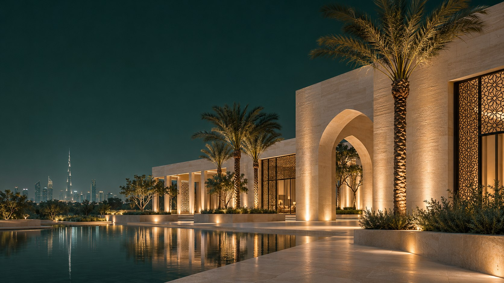

Menu
☰
Home
About Us
Our approach
Products
Projects
Lighting guide
Blog
Let’s talk
↗

OMEGALUX STUDIO · SELECTED WORK
Selected Projects
Site study to final execution
Project collection · Lighting design & supply
OMEGALUX STUDIO · PROJECTS
DESIGN · DETAIL · DELIVERY
AREA STUDY
← PREVIOUS
NEXT →
×
DIALUX FALSE COLOUR
LIGHTING RENDER
Drag the centre handle to compare the lighting render with the DIALux false-colour result.